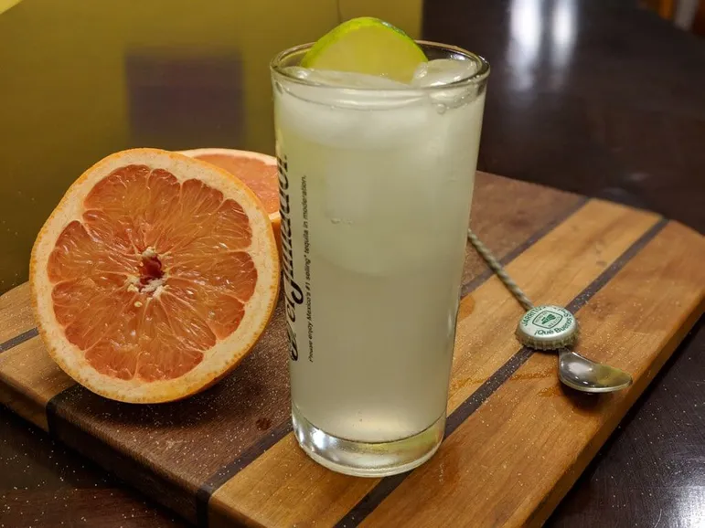

Inicio
Acerca de
Contacto
La Previa - Paloma
Un trago delicioso y lleno de mucho sabor que envolverá tu tarde en una fascinante estela de frescura.

PALOMA
Ingredientes
2 onzas de tequila
½ onza zumo de limón
1 gaseosa sabor a naranja
1 rodaja de naranja
Hielo
Preparación
Colocar en un vaso estilo Collins el hielo
Añadir e tequila junto con el zumo de limón
Completar hasta llenar con la gaseosa sabor a naranja
Decorar con una rodaja de naranja
Design by Walter Liendo - Copyright © 2022 -